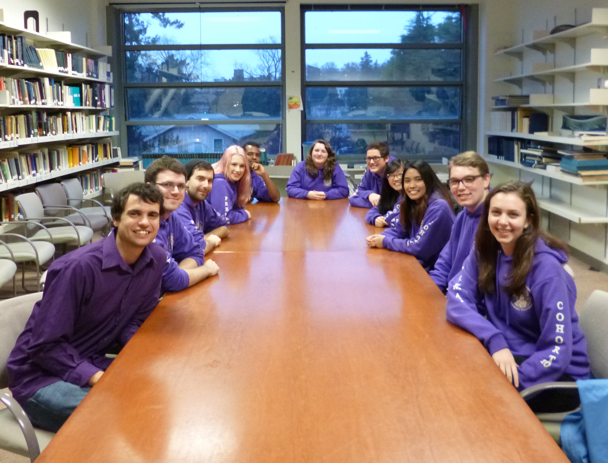
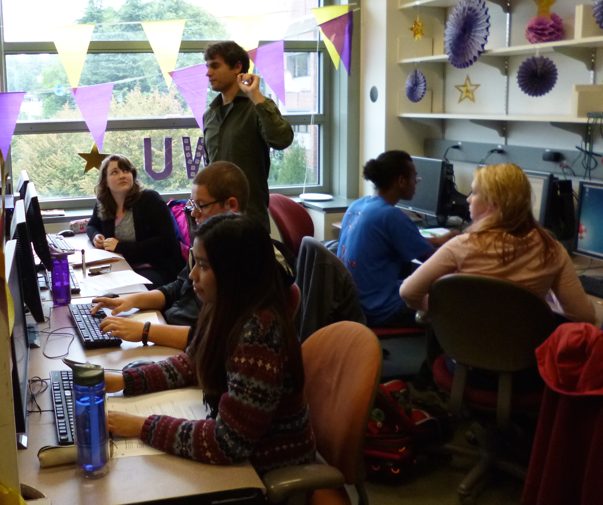

Teaching
|  |  |
|
Winter 2023: GEO 013: Our Planetary Neighbors: The Solar System and Beyond.
An introduction to the planets inside and outside of our solar system.
Fall 2022: NASC 093: Freshman Advising Seminar. Spring 2022: GEO 265: Ethics in Astrobiology. Winter 2022: GEO 182: Planetary Astrobiology for Science Majors. Fall 2021: GEO 013: Our Planetary Neighbors: The Solar System and Beyond. An introduction to the planets inside and outside of our solar system. Spring 2021: GEO 290: Planetary Atmospheres. A graduate-level course on planetary atmospheres. Winter 2021: GEO 013: Our Planetary Neighbors: The Solar System and Beyond. An introduction to the planets inside and outside of our solar system. September 2015: Workshop facilitator for Being a Research Assistant in the Physical and Natural Sciences during the UW's TA/RA Conference. You can see the slides I put together with a co-facilitator here (useful for new grad students!). Fall 2014: Instructor for ASTR 192: The Pre-Major in Astronomy Seminar. The Pre-MAP seminar includes an introduction to programming, research methods, scientific writing, and public speaking. My course website can be found here. The Pre-MAP program website can be found here. You can see a presentation I gave about Pre-MAP here. Winter 2014: CLUE Tutor for Astronomy 101 (Professor: Bruce Balick) Teaching Assistant, Astronomy Department, UW (09/2010-12/2013) Led discussion/quiz sections for the undergraduate introductory astronomy and astrobiology courses at the University of Washington: Astronomy 101 (Introduction to Stars, Galaxies, and Cosmology), Astronomy 150 (The Planets), and Astrobiology 115 (Life in the Universe) Quarters of instruction at the University of Washington:
Fall 2012-Winter 2013: Physics and Astronomy Tutor for Student-Athlete Academic Services. Spring 2011: CLUE Tutor for Astronomy 101 |